Product Details
Single Core cable
These are flexible single-core cables designed for internal wiring in power and control panels, switchgears, relay and instrumentation panels.
The category includes cables with PVC, FR (Flame-retardant), Super FR insulated cables as per IS:694:2010.
Our size ranges from 0.5 square mm to 120 square mm in single core cable.
Colors
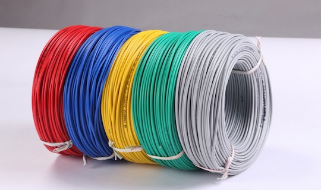Technical Specification
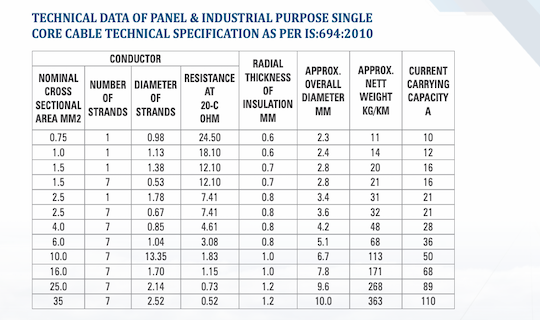Multi Core cable
These are multi-core cable designed for a house-holding, wide range of industrial process automation applications, including signal transmission, measurement, control and regulation..
This cables are avaialbe in PVC, FR (Flame-retardant) category as per per IS:694.
Multi core cables are available for 2-core to 34-core with required sizes.
Colors
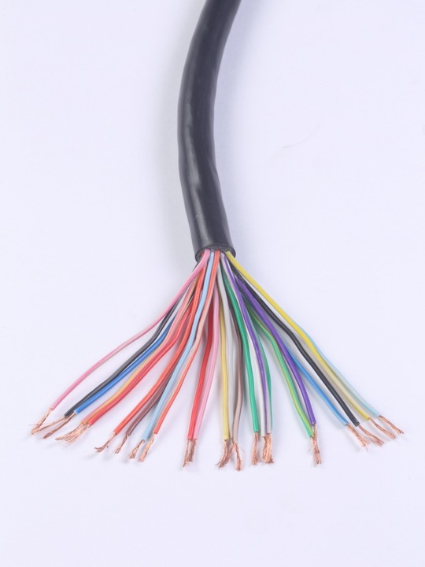Size
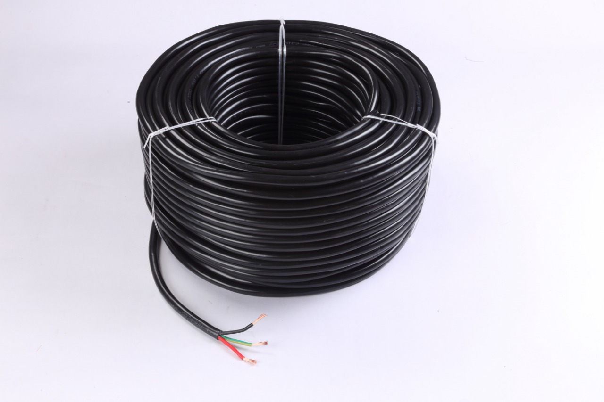 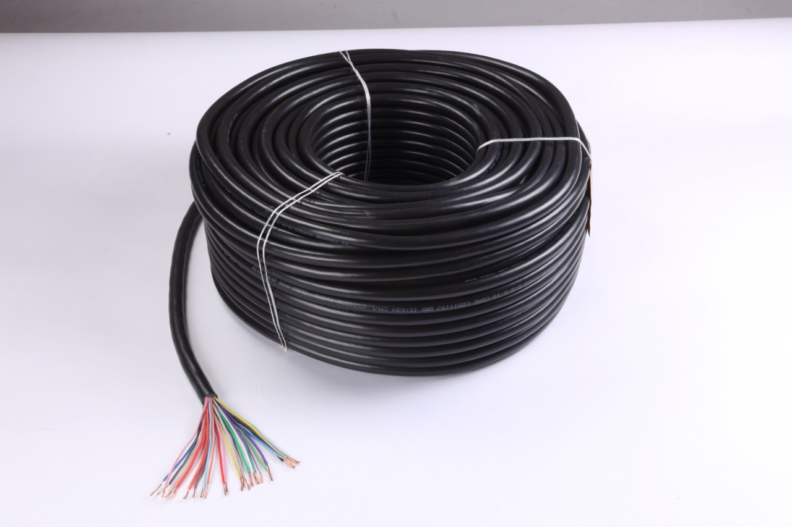Technical Details
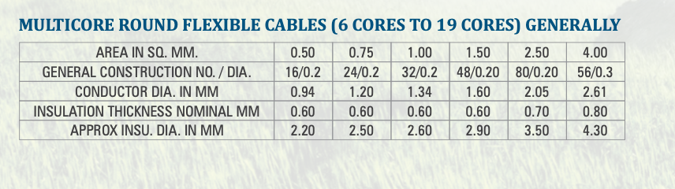Agriculture Flat cable
These are the flat-cables designed for agriculture use as well as used in submersible pumps. They are mainly used to supply power to pumps, they are also used in industrial applications. These cables are specially manufactured keeping in mind the severe, tough and difficult conditions in which they are used.
This cables are avaialbe in PVC, FR (Flame-retardant) category as per per IS:694:2010.
Flat cables are available for 2-core, 3-core and more based on requirement.
Size

Technical Specification

MCBs
Nilang offers a wide range of MCB suitable for protection against overload and short circuit for high current loads.
These MCBs are available in Single Pole (1P), Single Pole & Neutral (1P+N), Double Pole (2P), Three Pole (3P), Three Pole & Neutral (3P+N), and Four Pole (4P) versions.
Types

Technical Specification
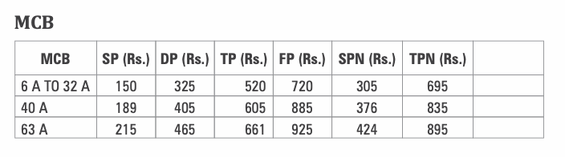Distribution Chambers
A Distribution Board, also known as Panel Board, Breaker Panel, or Electrical Panel is a component of an electricity supply system that divides an electrical power feed into subsidiary electricity components while providing a protective fuse or circuit breaker for each connection in a common enclosure.
Nilang Distribution Boards are equipped with an insulated Copper Bus Bar rating up to 100A that prevents short circuit current and holds ample wiring space to ensure proper distribution of Neutral and Earth wires.
These Distribution Boards are completely shockproof by earthing on the door for extra protection..

Cable Trays
Nilang have designed cable trays which are a mechanical support system that can support electrical cables used for power distribution, control, and communication.
They are the perfect solution for running large quantities of power or data cables overhead or under-floor.
Types
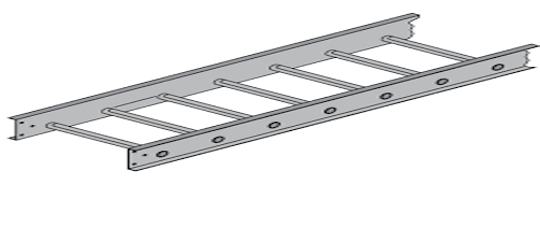 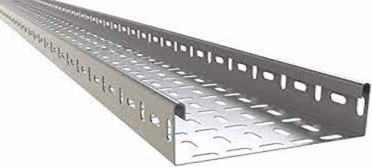Technical Specification
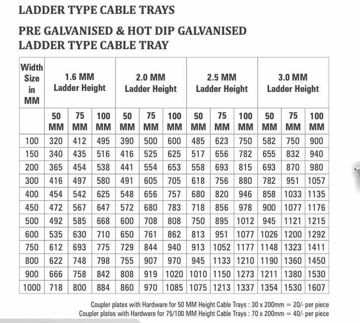Switch Gears
We have a very comprehensive range of general-purpose load changeover switches with side handle operation having wide application in all general industries where individual systems require safe and reliable transfer of power from main supply to standby and vice versa. Load changeover switches are supplied in CR sheet enclosure, side operated with three stables positions.
This is the type of changeover in which the time delay is provided with the help of the unit so that after changeover between supplies load is connected to other sources of supply after a particular time delay. This is a better-preferred method as it avoids surges or sparking which can occur due to sudden connection of load after the changeover.
Types

SWITCH
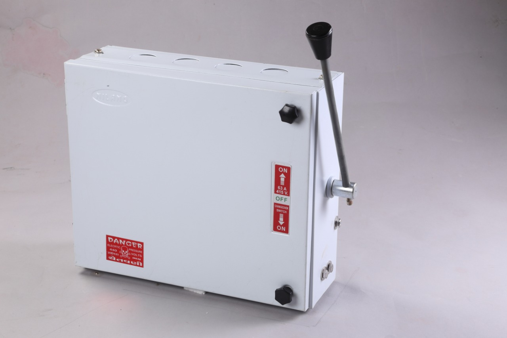FUSE SWITCH WITH SIDE HANDLE
REVERSING SWITCH SHEET STEEL ENCLOSURE
Switch Fuse Units
Nilang have designed Re-Wireable Switch Fuse Units which are used for distributing power, protecting electrical devices and cables from damage due to power fluctuations. The fuse unit is housed in an enclosure made using a quality CR sheet. The fuse units are stringently tested in compliance with the required industry standards.
Switch fuses are commonly used for industrial and domestic purposes.

Electrical Accessories
Nilang have designed different types of house hold holders that perfectly blends with creative home interior
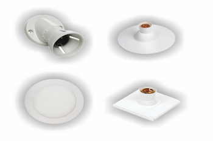